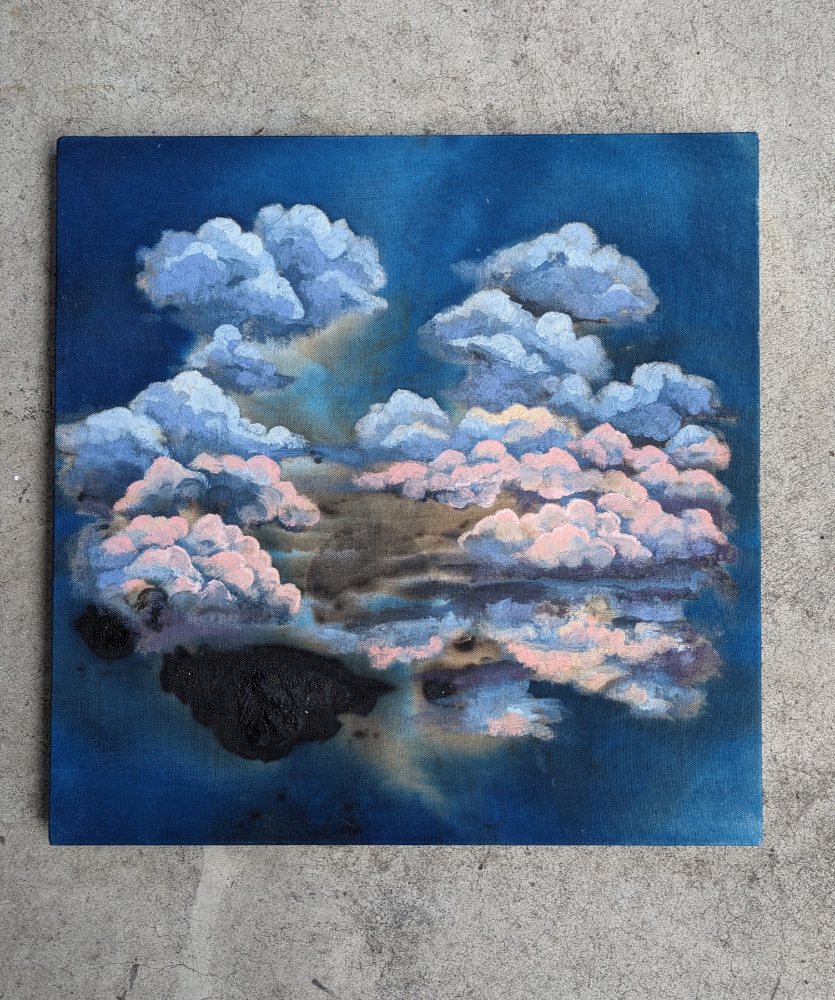
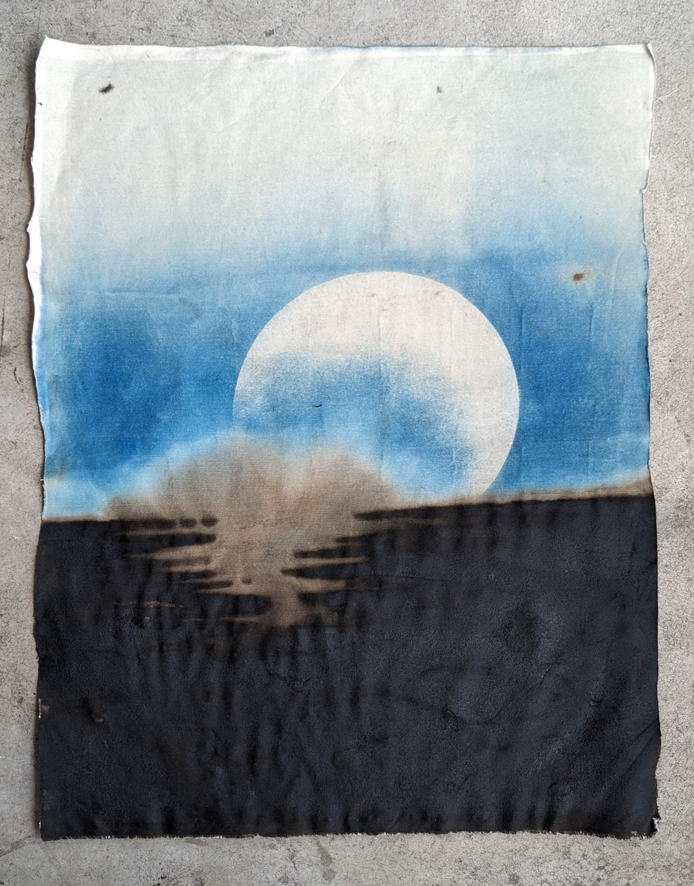

Folding — Cyanotypes
"Cyanotypes have become a throughline in my art practice, connecting my thoughts between the mediums I work in. If I were to describe it in a word it would be folding: a folding of time, of place, of media, of material, of relationships."
The series combines asphalt — ancient compressed plant matter — with cyanotypes made outdoors under natural sunlight. Exposure times vary by weather and season, producing darker blues on bright summer days and lighter, greyer tones in winter. The final colour only appears at the very last moment, when the canvas is washed in water.
The work layers geological time with the immediate present: asphalt carries millions of years of compressed life, while the image on its surface is made in a single day's light.





